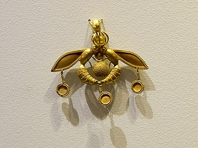

ca. 5000 v.C
Het oude Mesopotamië
Ongeveer 5000 jaar geleden was het maken van sieraden een belangrijk ambacht geworden in de steden van Mesopotamië. Het belangrijkste archeologische bewijs is afkomstig van de Koninklijke Begraafplaats van Ur, waar honderden graven uit 2900-2300 voor Christus.
ca. 5000-3000 v.C
Het oude Egypte
De oudste sieraden die vanuit het oude Egypte zijn gevonden zijn van ongeveer 3.000-5.000 jaar geleden. De Egyptenaren gaven de voorkeur aan de luxe, zeldzaamheid en bewerkbaarheid van goud boven andere metalen
2500 v.C
De oude bekende goude sieranden
Een set schelpenkralen die van 142.000 tot 150.000 jaar geleden zijn.
1600 v.C
Het oude Grieken
De oude Grieken begonnen met het gebruik van goud en edelstenen in sieraden in 1600 voor Christus, hoewel kralen in de vorm van schelpen en dieren in vroeger tijden op grote schaal werden geproduceerd.
8e eeuw v.C tot 3e eeuw n.C
Vroege Middeleeuwen
Van de Keltische sieraden zijn de zogeheten torcs het meest bekend. Het is een grote stijve of stijve nekring van metaal, gemaakt uit één stuk of uit in elkaar gedraaide strengen.
20e eeuw
Art Nouveau
Art Nouveau is een romantische periode waarin sieraden worden gekenmerkt door organische en door de natuur geïnspireerde motieven.
1920-1930
IkArt Deco
IkArt Deco is een kunststroming die ontstond tussen de twee wereldoorlogen. Het is een belangrijke periode voor sieraden en markeert een verandering in de maatschappij.
1940-1950
De retroperiode
De imposante afmetingen en voornamelijk gemaakt van geelgoud, ringen Tank werden vaak versierd met diamanten om hun schittering te benadrukken, maar ook met natuurlijke of synthetische edelstenen, die in die tijd erg populair waren.
1960-1970
De moderne periode

In de jaren 60 kwamen er indrukwekkende vintage sieraden van volledig goud, zoals cocktailringen, of, met meer fantasie, sieraden die democratischer waren.
na 1970
De hedendaagse periode
De jaren zeventig markeerden het einde van de 'Dertig Glorieuze Jaren' met zijn omwentelingen, die ook in creatieve trends tot uiting kwamen.